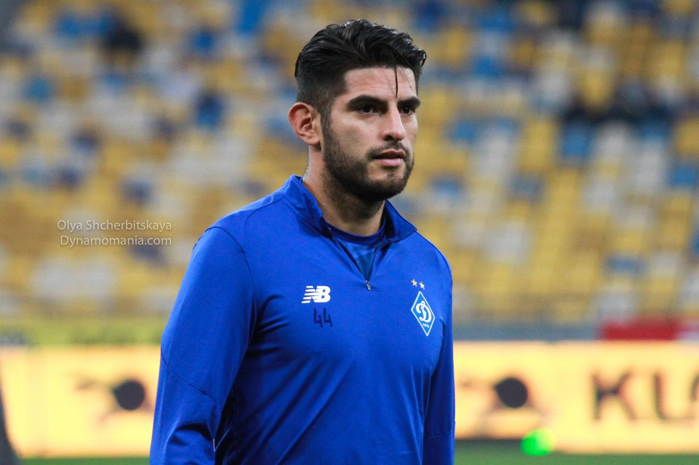
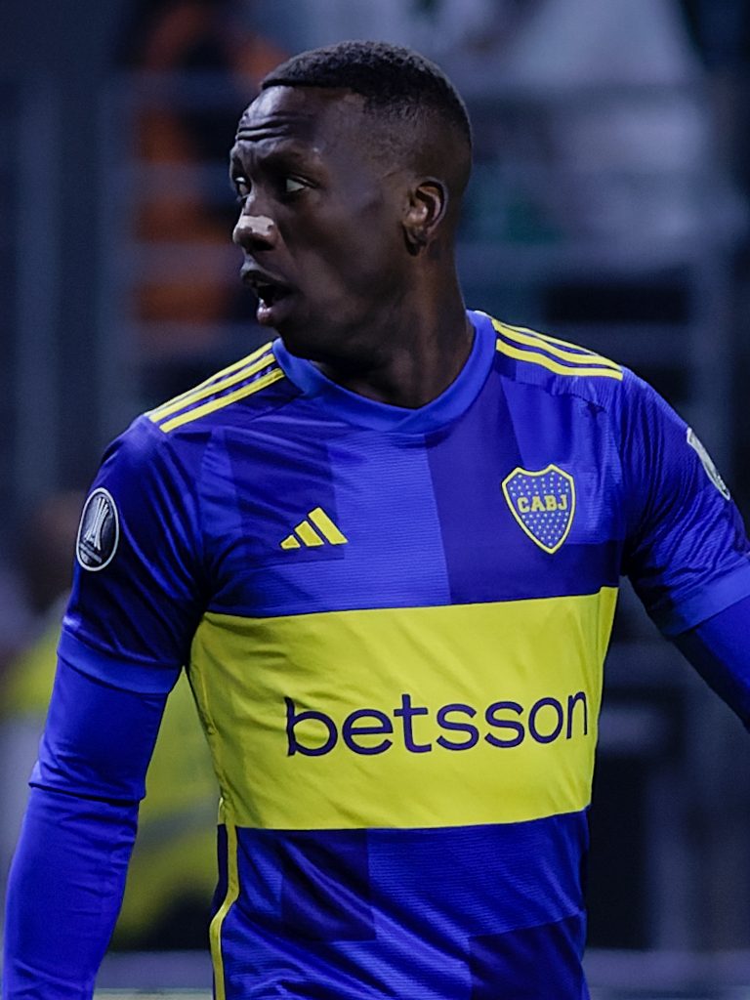
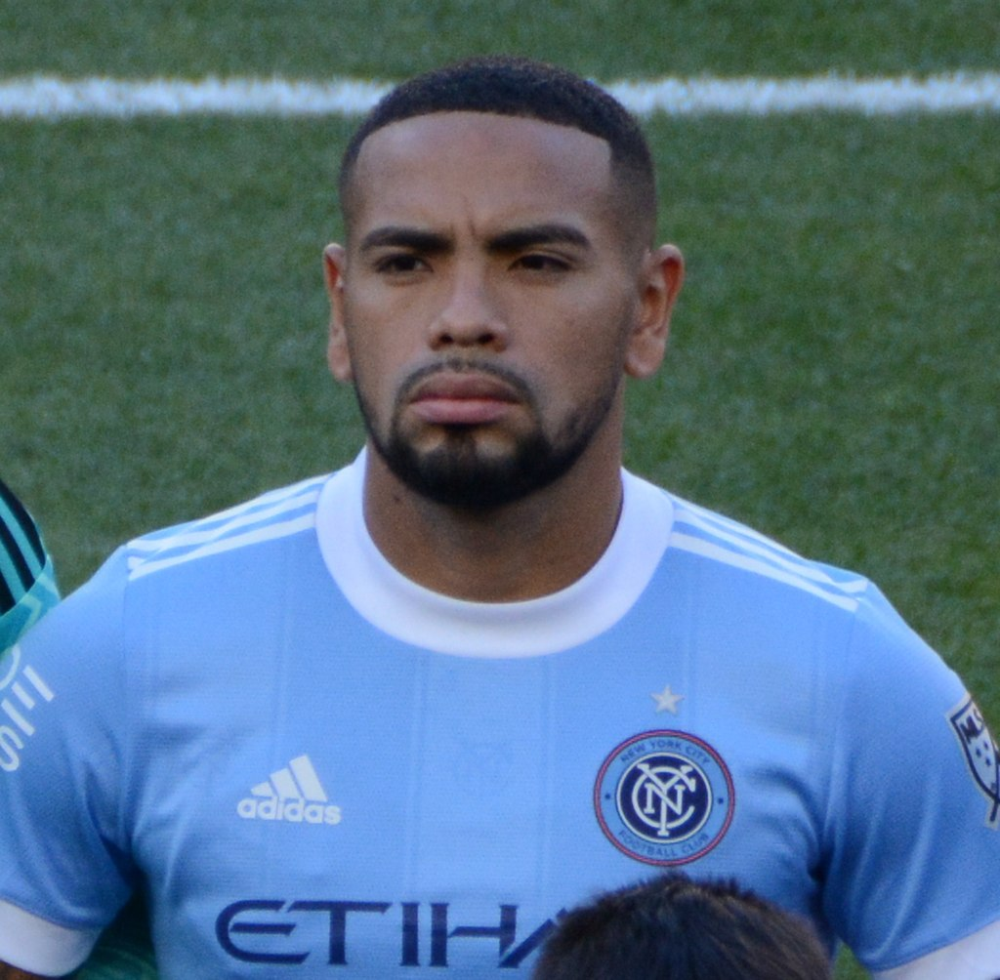
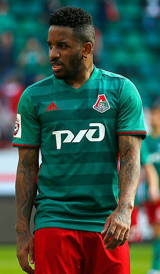
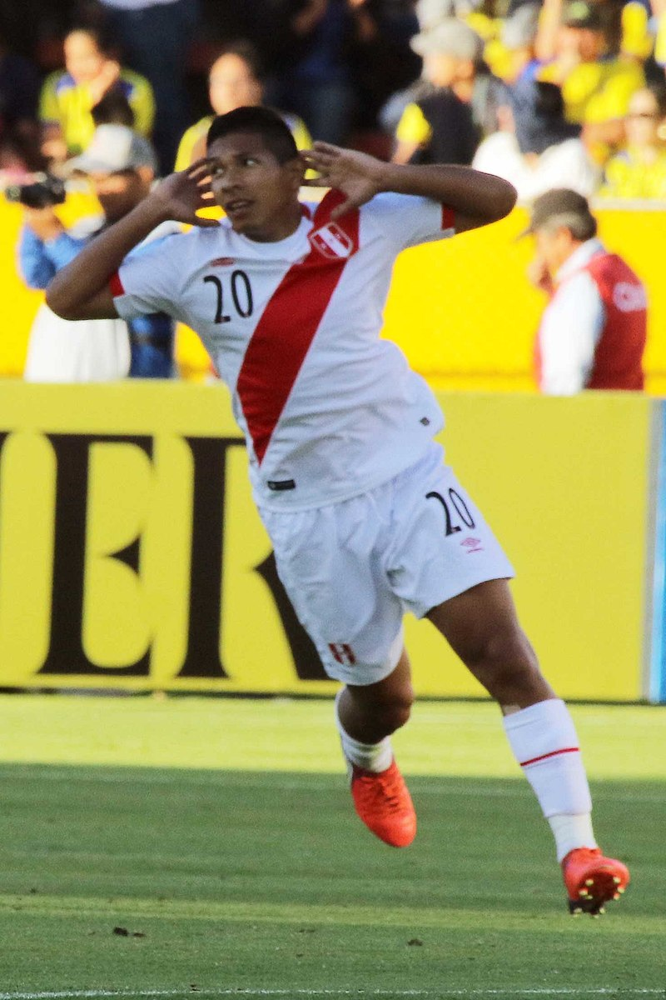
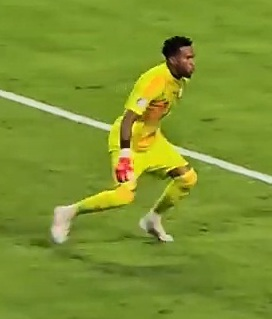
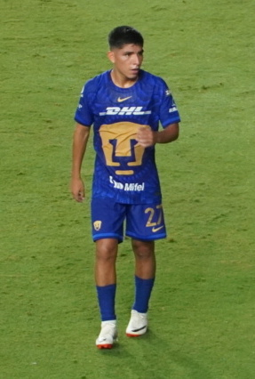
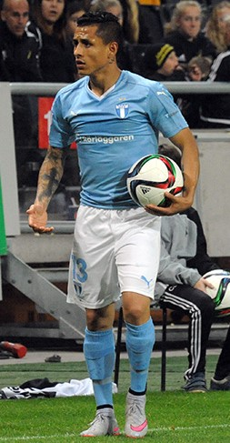

| Nombre |
Posición |
Edad |
Bibliografía |
Portada |
| Carlos Zambrano |
Defensa central |
36 |
Defensa sólido y líder del equipo, con experiencia en clubes europeos como Eintracht Frankfurt y Schalke 04. |
 |
| Luis Advíncula |
Lateral derecho |
35 |
Rápido y resistente, destaca en la defensa y en las incorporaciones al ataque. Ha jugado en Rayo Vallecano y Tigres UANL. |
 |
| Alexander Callens |
Defensa central |
33 |
Defensa seguro, fuerte en juego aéreo y salida de balón. Experiencia en MLS con New York City FC y Sporting Cristal. |
 |
| Jefferson Farfán |
Delantero centro |
40 |
Delantero emblemático del fútbol peruano, con velocidad, técnica y experiencia en PSV, Schalke 04 y Lokomotiv Moscú. |
 |
| Edison Flores |
Media punta |
31 |
Creativo y técnico, aporta goles y asistencias. Ha jugado en Universitario, Aalborg BK y DC United. |
 |
| Pedro Gallese |
Portero |
35 |
Portero destacado, ágil y seguro. Experiencia en Orlando City y selección peruana, clave en eliminatorias y Copa América. |
 |
| Gianluca Lapadula |
Delantero centro |
35 |
Delantero con olfato goleador, de ascendencia italiana-peruana. Ha jugado en Serie B y Serie C en Italia y ahora en selección peruana. |
|
| Marcos López |
Lateral izquierdo |
25 |
Lateral rápido y habilidoso, con capacidad defensiva y ofensiva. Actualmente juega en San Jose Earthquakes y selección peruana. |
 |
| Paolo Guerrero |
Delantero centro |
41 |
Máximo goleador histórico de Perú, con trayectoria en Bayern Múnich, Corinthians y Flamengo. Ícono y líder en la selección. |
 |
| Piero Quispe |
Media punta |
24 |
Joven promesa peruana, creativo y con gran visión de juego. Destaca en Universitario y selección nacional. |
 |
| Renato Tapia |
Mediocentro defensivo |
30 |
Mediocampista versátil y fuerte, clave en recuperación y distribución. Experiencia en Feyenoord, Celta de Vigo y FC Twente. |
 |
| Yoshimar Yotun |
Mediocampista / Lateral izquierdo |
35 |
Versátil, técnico y con buen pase. Ha jugado en Sporting Cristal, Orlando City y Vasco da Gama. |
 |